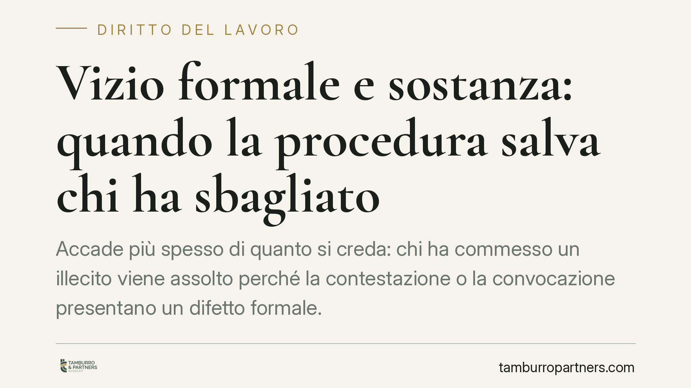

Vizio formale e sostanza: quando la procedura salva chi ha sbagliato
Accade più spesso di quanto si creda: chi ha commesso un illecito viene assolto perché la contestazione o la convocazione presentano un difetto formale. Non è un capriccio dell'ordinamento, ma la tutela di garanzie procedurali che valgono anche per chi ha torto nel merito. Vediamo come funziona nel diritto del lavoro e nel condominio, e come muoversi.

Il paradosso: torto nel merito, ragione nella forma
Nel nostro ordinamento la regolarità della procedura non è un orpello. È la condizione che rende legittima una decisione, sia essa un licenziamento o una delibera assembleare. Per questo un provvedimento fondato può essere annullato: non perché chi lo ha subito avesse ragione nel merito, ma perché chi lo ha emesso non ha rispettato le regole del gioco.
È un principio garantista. Le forme procedurali proteggono tutti, anche chi effettivamente ha sbagliato. Rinunciarvi per punire il colpevole significherebbe indebolirle per l'innocente.
Inquadramento normativo
Nel diritto del lavoro, l'art. 7 dello Statuto dei lavoratori (legge 300/1970) impone la contestazione disciplinare immediata e specifica. La Cassazione Civile, Sezione Lavoro, ha ribadito che la contestazione tardiva viola il diritto di difesa del lavoratore: se il datore attende troppo prima di contestare l'addebito, la sanzione è illegittima anche quando il fatto contestato è realmente accaduto e grave.
Il principio è quello dell'immediatezza: la contestazione va formulata appena il datore ha piena conoscenza dei fatti. Un ritardo ingiustificato pregiudica la possibilità di difendersi e fa presumere la scarsa gravità dell'episodio.
In ambito condominiale, l'art. 66 disp. att. cod. civ. disciplina la convocazione dell'assemblea. L'avviso deve pervenire ad ogni condòmino almeno cinque giorni prima della prima convocazione, deve indicare l'ordine del giorno e va comunicato con mezzi tracciabili (raccomandata, PEC, fax o consegna a mani). La delibera adottata da un'assemblea convocata in modo difettoso è annullabile su impugnazione del condòmino assente o dissenziente, a prescindere dalla bontà della decisione presa.
Cosa cambia in concreto
Per il datore di lavoro, la conseguenza è netta: un licenziamento per giusta causa può essere dichiarato illegittimo per il solo ritardo nella contestazione, con obbligo di reintegra o indennizzo secondo il regime applicabile. Il fatto commesso dal lavoratore resta, ma non produce più l'effetto voluto.
Per il lavoratore, il vizio procedurale è una linea difensiva concreta, ma non un salvacondotto: va eccepito nei termini e provato.
Nel condominio, il condòmino che non è stato convocato correttamente può impugnare la delibera entro trenta giorni (dalla delibera se presente dissenziente, dalla comunicazione se assente). Anche una decisione ragionevole nel merito - ad esempio un lavoro necessario - può essere travolta se la convocazione era irregolare. L'amministratore ne risponde in termini di responsabilità gestoria.
Lo stesso schema ricorre nei rapporti con l'Amministrazione tributaria, dove un accertamento fondato può essere annullato per vizi di notifica o motivazione: la sostanza dell'obbligo tributario non basta a sanare l'errore procedurale.
Perché l'ordinamento tollera questo esito
La risposta è nel bilanciamento. Se ammettessimo che la fondatezza nel merito sana qualunque vizio, ogni garanzia procedurale diventerebbe negoziabile a posteriori. Il diritto di difesa, il contraddittorio, la corretta informazione perderebbero forza proprio nei casi in cui servono di più.
La forma, dunque, non è nemica della giustizia sostanziale: ne è il presupposto. Chi esercita un potere - disciplinare, deliberativo, impositivo - deve farlo nel rispetto delle regole, altrimenti quel potere non produce effetti.
Cosa fare in concreto
- Datore di lavoro: contesta l'addebito appena hai piena conoscenza dei fatti, in forma scritta e specifica, indicando circostanze e date. Non rinviare in attesa di "raccogliere altro".
- Lavoratore: verifica tempi e specificità della contestazione ricevuta e valuta subito l'eccezione di tardività, rispettando i termini di impugnazione.
- Amministratore di condominio: invia le convocazioni con mezzi tracciabili, rispetta i cinque giorni di preavviso e conserva le prove di ricezione per ogni condòmino.
- Condòmino: controlla la regolarità della convocazione e, se assente o dissenziente, impugna la delibera entro trenta giorni.
- In ogni caso: fai verificare la regolarità procedurale prima di agire o di difenderti nel merito. Spesso è lì che si decide l'esito.
Un'avvertenza
Il vizio formale non è una strategia universale. Va individuato con precisione, eccepito nei termini e sostenuto con prove. Affidarsi al solo difetto procedurale senza verificarne l'esistenza e la rilevanza è un rischio.
---
*Contributo informativo a cura di Tamburro & Partners - Avv. Giuseppe Tamburro. Non costituisce parere legale.*
Ogni storia di lavoro ha i suoi tempi.
Se gestisci HR e vuoi un confronto su contenzioso, ispezioni o licenziamenti, scrivi allo studio. Ti rispondiamo entro un giorno lavorativo.